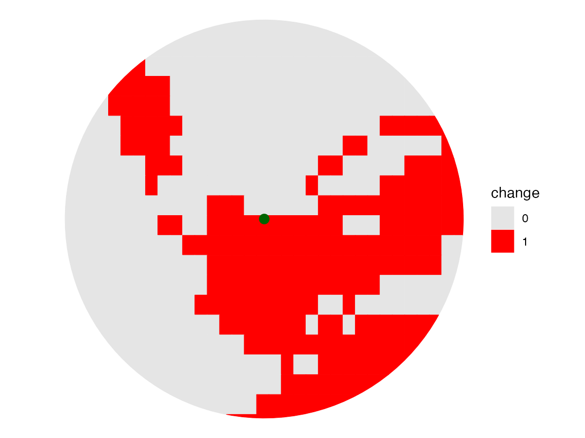
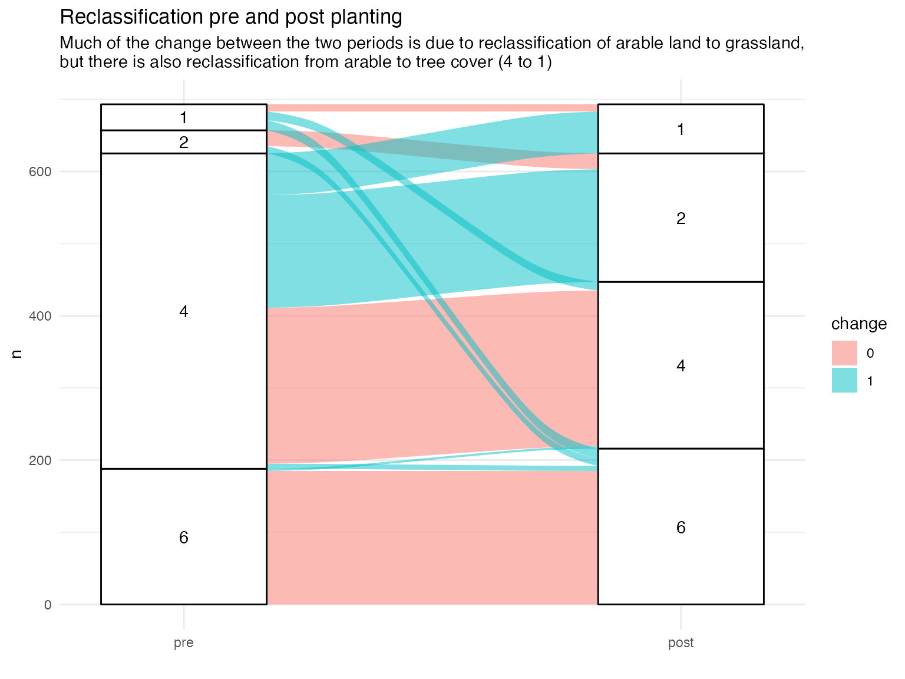

Land cover and land use
land-cover.RmdtinyforestR provides two different ways of getting land
cover data.
Dynamic World
The first uses Dynamic World data which is derived from Sentinel 2 satellite imagery from the EU Copernicus programme Brown et al. (2022). Dynamic World (DW) is 10m resolution near real time data with a 9 class land cover classification created by a machine learning algorithm. Although the resolution is too low to detect change at the level of a Tiny Forest, it can detect change in the surrounding area. There are 9 land cover classes:
| Value | Color | Description |
|---|---|---|
| 0 | #419bdf | water |
| 1 | #397d49 | trees |
| 2 | #88b053 | grass |
| 3 | #7a87c6 | flooded_vegetation |
| 4 | #e49635 | crops |
| 5 | #dfc35a | shrub_and_scrub |
| 6 | #c4281b | built |
| 7 | #a59b8f | bare |
| 8 | #b39fe1 | snow_and_ice |
Extracting DW data requires a Google Earth Engine (GEE) account https://developers.google.com/earth-engine/guides/getstarted.
First we need to run initialise_tf, and initialise
GEE
## initialise tf
initialise_tf()
#> virtualenv: tinyforest
#> Using virtual environment 'tinyforest' ...
ee <- import("ee")
## initialise GEE
ee$Initialize()
Load TF data
data("tf_data")Get DW data
We’ll extract DW data for a 100m buffer around the TF location 85 (=> 100 pixels), for the year before and after planting.
First we’ll draw a 100m buffer around the TF point location
needs(patchwork, stars, ggplot2, tidyterra, sf, alluvial, ggspatial)
tf_buffer <- tf_data |>
slice(1) |>
st_as_sf(coords = c("lon", "lat"), crs = 4326) |>
st_transform(27700) |>
st_buffer(100) |>
st_transform(4326)
tf_point <- tf_data |>
slice(1) |>
st_as_sf(coords = c("lon", "lat"), crs = 4326) Then extract DW landcover data via get_dw_landcover for
a 100 x 100 m plot centred on the TF.
lon <- tf_data$lon[1]
lat <- tf_data$lat[1]
tf_id <- tf_data$tf_id[1]
plant_date <- tf_data$plant_date[1]
s1 <- plant_date - 365
s2 <- plant_date + 365
pre <- get_dw_landcover(tf_id = tf_id, lat = lat, lon = lon, dist = 100, start_date = as.character(s1), end_date = as.character(plant_date))
#> Generating URL ...
#> Downloading data from https://earthengine.googleapis.com/v1/projects/earthengine-legacy/thumbnails/e065e32dbd9ed2f1bed82934b849a128-6fe098db3d1582f90abd09cda66468bf:getPixels
#> Please wait ...
#> Data downloaded to /var/folders/bk/jrqs03tx5mq9s28mhml5xzhm0000gn/T/Rtmp7lvZN3/dw.tif
post <- get_dw_landcover(tf_id = tf_id, lat = lat, lon = lon, dist = 100, end_date = as.character(s2), start_date = as.character(plant_date))
#> Generating URL ...
#> Downloading data from https://earthengine.googleapis.com/v1/projects/earthengine-legacy/thumbnails/5f07a18be213bcd6d579179fe324e47d-afccac438823a3977c74e3ebcfb4f479:getPixels
#> Please wait ...
#> Data downloaded to /var/folders/bk/jrqs03tx5mq9s28mhml5xzhm0000gn/T/Rtmp7lvZN3/dw.tifSimple change detection method
post_sf <- post$raster |> st_as_sf()
pre_sf <- pre$raster |> st_as_sf()
pre_sf |>
st_join(post_sf, join = st_contains) |>
rename(pre = 1, post = 2) |>
mutate(change = post - pre,
change = factor(ifelse(change == 0, 0, 1))) |>
st_intersection(tf_buffer) |>
ggplot() +
geom_sf(aes(fill = change, colour = change)) +
geom_sf(data = tf_point, size = 3, colour = "darkgreen") +
scale_fill_manual(values = c("grey90", "red")) +
scale_colour_manual(values = c("grey90", "red")) +
theme_void()
#>
#> ── R CMD build ─────────────────────────────────────────────────────────────────
#> * checking for file ‘/private/var/folders/bk/jrqs03tx5mq9s28mhml5xzhm0000gn/T/Rtmp7lvZN3/remotesaadc533b6798/corybrunson-ggalluvial-5ead4ce/DESCRIPTION’ ... OK
#> * preparing ‘ggalluvial’:
#> * checking DESCRIPTION meta-information ... OK
#> * checking for LF line-endings in source and make files and shell scripts
#> * checking for empty or unneeded directories
#> * looking to see if a ‘data/datalist’ file should be added
#> * building ‘ggalluvial_0.10.0.tar.gz’
Where is the change from grass to trees?
We can map pixels where the land cover classification has changed from grass to trees - note this may be influenced by the quality of satellite imagery and the performance of the classification algorithm.
pre_sf |>
st_join(post_sf, join = st_contains) |>
rename(pre = 1, post = 2) |>
mutate(change = post - pre,
change = factor(ifelse(change == 0, 0, 1))) |>
filter(change == 1, pre == 4, post == 1) |>
ggplot() +
ggspatial::annotation_map_tile() +
ggspatial::annotation_scale() +
geom_sf() +
ggspatial::annotation_north_arrow(location = "tr") +
ggtitle("Pixels reclassified from arable to tree cover") +
theme_void() +
theme(plot.title.position = "plot")
#> | | | 0% | |=================================== | 50% | |======================================================================| 100%Ordnance survey data
A second approach available via tinyforestR is to
extract data from the National Geography Database (NGD) provided by
Ordnance Survey. Unlike the DW raster data, this is vector data. The NGD
was made available over the last couple of years and contains GIS
information on all the detailed features used on OS maps. Unlike DW data
this is ground-truthed by on the ground surveyors. It provides both
land-use and land-cover classification - note these may not concur with
other classification systems like CORINNE or CEH, altough as I write I
see that OS have updated land-cover classifications to map to UK-BAP and
EUNIS 1.
OS land-cover features include residential gardens, scrub areas, broad-leaf woodland. The fill feature list is shown
To use this data, the first step is to set up an account for the OS Datahub, and subscribe to a premium account. (There is a free account, but the premium account is faster and there is £1000 per month free premium access). This will give an API key for the OS Datahub API https://osdatahub.os.uk/docs/ofa/gettingStarted.
The key should be stored as an environment variable in an
.Renviron file.
needs(usethis)
usethis::edit_r_environ()
Sys.setenv(OSDATAHUB = "your key")The main issue with using the NGD API is that is restricted to 100 features per call, so multiple calls may need to be made to download all the features for a given area. A related issue is that it is hard to guess in advance how many features might be included in your area of interest.
key <- Sys.getenv("OSDATAHUB")
## get OS data
os_test <- os_ngd_api_call(tf_buffer, key = key, offset = 0)
os_test$os_lc |>
st_transform(4326) |>
st_intersection(tf_buffer) |>
mapview::mapview(zcol = "description") In this case 100 feature extraction is enough to cover our region of interest. Note that although the Tychwood TF is an OS map feature, it is not separately identified as woodland. Nevertheless, we can see that 100m is a mix of residential gardens (an important part of green infrastructure), deciduous tree cover and grassland. Interesting it doesn’t include the wooded areas along the roads.